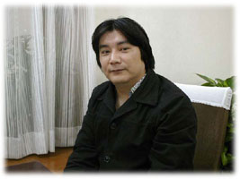
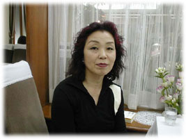
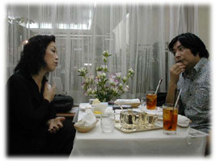

|
自傷って、身体で感じること
信田 今さん路線っていうのはわかるけれども、それにしてもこの本の内容は真面目だな。
今 僕自身の印象と書いている内容が違うって、よく言われます（笑）。今日は元ネタの信田先生にお叱りを受けようと思って。
信田 私はそんな資格はないです。
今 『アディクションアプローチ』（医学書院）は画期的な本でしたね。僕は咀嚼するのにすごく時間がかかった。信田さんのポジションってすごくアンビバレントなのね。完全に医療の立場ではないし、民間の立場でもない。そこで＜脱医療＞という文脈に説得力を持たせるというのは、実はすごく大変なんだけれども、『アディクションアプローチ』という本は成功してますね。
信田 けっこう過激な本なのですよ。
今 ＜脱医療＞は女の人しか言えなかったことだと思った。＜脱医療＞って、いわば商売も地位も全部捨てちゃうこと。だから精神科医が言えるかというと、言えませんよね。
信田 残念ながら言えないだろうと思うよ（笑）。
今 ものすごくエポックメーキングな本ですよ。だからこそ＜脱医療＞という視点がもうちょっと医療の現場や、自傷者の周りや家族にたどり着けるようになれないものかと思って、今回の本を書いたんです。
信田 でも、臨床心理士の世界ではあの本は無視されてるから。臨床心理士というのは、いまだに診断と分析は踏み越えていないんじゃないかな。
今 僕は『生きちゃってるし〜』のトップに、「頭で考えるな、肌でつかめ」（ブルース・リ−）と書いたけれども、そういうことって簡単なようでいて忘れがちなことじゃないですか。
信田 自傷って、まさに身体で感じることだものね。
東京で偏差値が中の上ぐらいの私立高校の、先生たちの集まる研究会があるんですよ。先日そこに呼ばれて、リストカットする子にどう対処したらいいかというテーマで話してくれと言われたんです。本当はそんなものはほっとけばいいと思うのですが、そう言ってはいけないから、ちゃんとスーツなんか着て出かけた。驚いたのは、リストカットのあまりの多さですよ、男女共に。私は今さんの本をいろいろ読んでいるのだけれども、リストカットの広がりはここまでかと思いましたよ。
朝来ると、1時間目にみんなでリストカットを見せあいっこしてて、授業が成立しないっていうわけ。面白いのは、学校で先生はリストカットしても何も言わないんだって。そういう生徒と廊下ですれ違って、先生が「君、どうしたの」というと、ホームページのアドレスを渡してくれる。家に帰ってそれをみてみると、写真とリストカットの日記が延々と書かれている。先生たちはホームページをみて、その子のリストカットの進捗状況をみるという。
今 それは氷山の一角ですね。ホームページを見てくれる先生はまだマシな先生なんですよ。アドレスを教えてもらっても、見ない先生のほうが多い。見たっていう先生はなかなかの人ですよ。
信田 すごく真面目な人でね、「実は僕もすごく真剣に、手を震わせながら1回切ってみようかと思った」というわけよ。
今 ロブ@大月クンと同じですね。『リストカットシンドローム』（ワニブックス）の著者。
医療は部分的救済にすぎない
今 リストカットは何度やろうとも死にません。体はそんなに簡単には死なない。だけど南条あやパターンはこわいと思う。『卒業式まで死にません』（新潮社）の著者ですが、彼女はリストカットとオーバードーズの両方をしていたんですよ。彼女は、死にたいとは思うけれど、確実な手段としてリストカットとオーバードーズしてるわけではない。卒業式の日も、自分の友達に「自殺に失敗したら連絡するね」って。だからいつものようにクスリを過剰投与していた。卒業式に死んでしまったけど、偶然なんです、その日に死んだのは。
僕が彼女の父親に会って聞いてみたら、医療ミスだろうと言う。オーバードーズで３時間で逝ってしまったからおかしいということになって、司法解剖が行なわれたんですよ。その結果、心臓の弁に穴があいていた。要するに、彼女は女性だから出血多量のチャンスが余計に多いわけですよね。血が出れば、血が運んでる酸素も足りなくなる。だから、息が上がる。そうすると、血の流れるスピードが上がるんです。全身に酸素を早く行き渡らせないといけないから。心臓のポンプアップが加速して、力いっぱいに血を送ろうとする。そこで酸欠気味の脳に向精神薬をガンガン入れて無理矢理脳の働きを左右するから、心臓と脳そして呼吸器の負担が過剰に大きくなって、臓器がものすごく疲れちゃったわけ。
信田 両方やるとそういう危険性があるということ？
今 そう。だからこそ体への負担を危険視すべきなのに、精神科と他の科の連携って患者からは全然伝わってこないんです。僕の自傷ラーの友達が、パタンと倒れて泡を吹いたんで、病院に連れていったら、救急の医者は「精神科で診てもらえば」と言った。結局、精神科だけが他の科から仲間外れにされて聖域化している部分がある。総合病院の構造改革をやってほしい。地域医療では各科の連携をとってもらわないと。精神科だから「この薬を飲んでおけ」というのでは医療として不完全だと思う。薬漬けのおかげで患者の心拍数はどうなっているのかを把握してほしい。
信田 診断名を教えないしね。原宿カウンセリングセンターにも、息子さんの問題で親がくるわけ。「精神科でなんて言われたのですか」と聞くと、「何でしょう？」と言う。診断名を教えないし、曖昧にするんですよ。逆に教えないということは分裂病かなと推測しちゃったり。ボーダーラインというほうがまだまし。
今日はオーバードーズのことを聞きたかったんです。私たちのところに来ている人の子供が、医者からもらった薬を貯金のようにためて段ボールいっぱいにして、それを乳鉢で摺ってアルコールをいれてバッと飲んで、ニルヴァーナのCDなんか聴いているわけよ。すごいでしょう。
今 すごいですね。僕は信田さんがニルヴァーナと発音したことに驚いてる（笑）。さすがクライアント個々の話をつぶさに記憶されてますね。
信田 CDって、エンドレスにできるじゃない。その子のお母さんが、「ご飯よ」と言っても降りてこない。夜中も聴いている。おかしいと思って、翌日の午後に部屋に行ったら、彼は冷たくなっていた。まだ段ボールいっぱい薬が残っていたんだって。彼女は医療関係者ですから、飲みもしなかった薬を出した医者を訴えようと思った。でもね、息子をなくした衝撃で、裁判をおこす気力がなくてそのままにしました。けれども、「私は薬を出した医者が許せません」と言っています。
今 『生きちゃってるし〜』の主旨としては、リストカット、オーバードーズも含めて、「自傷→精神科」というような短絡をやめたかったんですよ。
信田 「自傷→精神科」以前ですよ。精神分析の治療者や医者は最初に約束させちゃうわけ。「手首を切ったら、もう会いません」って。私なんか、「手首を切ったら会わないって、あんたそれは何なの」って思う。
今 最近は病院もホームページを持っていたりするじゃない。そうすると、トップページに「自傷の方は受付けません」とか書いてあったりする。精神科医が自傷する患者を煙たがっているんですよ。
信田 煙たいという表現でぴったりする？ それって精神科医の無能さの表明じゃない。
今 まったくそう。初めからダメだろう、自分の理解を超えてる人たちなんだ、という見方をする。一番怖いのは、精神科医が書いた本を、田舎に住んでいる自傷ラーが無批判に受け入れてしまうこと。医療とは別の視点がもうちょっと出てきてもいいんだけれど、マスメディアは安易に精神科医にコメントさせたがるし、やりきれないですよ。
みんな切ってるじゃん。
今 １０月に京都で「自傷セミナー」をやるんですよ（※自傷セミナーについてはhhttp://www.geocities.co.jp/HeartLand-Momiji/7990/jisyolar.html）。
昨年末、渋谷で自傷者を集めて「自傷だヨ、全員集合！」というイベントをやったんです。観客の８、９割が自傷ラーで、そこに1割ぐらいは切ったこともないという人や、自傷ラーの家族や恋人がくる。で、驚くわけです。自分の娘だけが切っていると思ってたら、みんな切ってるじゃんって。だからそういうイベントに出てくれば、わかる話なの。ところが、そんなチャンスはないと思っているわけ。あるのに、情報にアクセスしていかない。なぜかというと、見ている側もこわいから。その場でみんなで切りあっているんじゃないかって思ってる（笑）。僕は、なるべく早めに、親たちが「自分の娘のやっていることは決して変なことではないんだ」と思ってほしい。そんなにびびることではない。毎日出血量が何リットル、という人はいないんでね。
信田 身体を傷つけるということの衝撃がないのかな？ アルコール依存症の人たちは手首は傷つけないけれども、毎日飲んで、内臓は死に近づいているわけでしょう。私はアディクションということで同じだと思う。目に見える傷をつけるか、目に見えない傷をつけるかの違いだよな。
今 そうなんですよ。結局ね、闘っているところが見えちゃうからだと思う。
信田 ものすごく可視的だからね。
リストカッターってかなり前からいたでしょう？
今 ８０年代の後半には一般のメディアにぽつぽつ出てきましたね。パンクが流行したのと同時期から。
信田 女性のアルコール依存症者って、しょっちゅう手首を切っていて、鏡を見ながら切るっていう話も聞いていたから。こんなに裾野が広がって、自傷ラーという言葉が出来て、大勢の人が集まるというのは、いつ頃からで、なぜなんでしょうかね。
今 自傷ラーがムーヴメント化して顕在化し始めたのは、ここ数年の話ですが、90年代の前半には既に「恋人が出来たから酒を飲むのをやめた」「酒を飲んでいる親父が家族が死んで突然酒を飲まなくなった」とか、信田さん、講演で話してましたよね。それは一体何を意味しているのだろうと、僕はずっと考えてたんです。結局、本人がやめる気になったことを考えると、出会いを求めることで得られる救済のチャンス拡大の意義は大きいと思ったんですよ。同じような人間関係、同じような日常が繰り返されていると、人はただでさえおかしくなるんです。
信田 それは新たな出会いの希求なの？ それとも繰り返される日常で嫌だわ、ということのメッセージなの？ ちょっとカッコよくいえば、リアリティが空白なんだなと思うのだけれども。
今 確かに大袈裟に切っている子は、生きたいという感じを自分に対してデモストレーションするようなところがありますよね。
信田 一つはやっぱり自我の拡散があるわけでしょう。切ると拡散された自我が収斂する快感があると聞いたり、痛みと流れる血の温かさというものでリアルという感じが湧くとか。それが喪失されてきた、ということですかね。これは自傷ラーの元締めの今さんに聞いているのだけれども。
今 ボーダーラインといってしまえば片付くという問題じゃないから、僕は分析したくはないんですよ。自分で書きながらも、分析は当事者の胸には届かないと思う。説明は説明だもの。何度聞いても。医療とは別の試みがないと、毎日の生きづらさは変わらないから、説明より「今の自分にできること」を考えるヒントを提供したい。
「身体」から始めよう
信田 私はね、お母さんが精神科医の権威が書いたのだから、と鵜呑みにして家でリストカットしている娘に対処したら、たまらないと思うんだよね。やはり自傷ラーの家族に対して、当事者のリストカットに至るプロセスを説明する人ができるだけいたほうがいいかなと思う。私は本人にも会うけれども、圧倒的に家族に会っているからね。家族はみんな、「死にたがっているからリストカットをやっている」と思うわけよ。
今 自傷行為は、１人で家族の問題を一身に受けようという人柱的な役割を演じてるようなもの。私だけが苦しんでいればいいんだと思うときに、怒りが自分に向いている。これ以上、両親には迷惑をかけたくない。かといって自立もできない。外に出れない。だから自分の部屋のなかで真夜中に自傷をしている。田舎の子はみんなそうですね。都市郊外在住でホームページをもっている子は、日常的にケータイで連絡できるメール友達がいて、同じ自傷ラーたちと話してたりもするんですが。
信田 一番金もかからずに、一番身近に、右手があれば左手を切れるという。いちばんイージーというと言葉が悪いのだけれども、誰にでもできるアディクションだよね。
今 安心して喧嘩しあえる相手がいないんです。だから空手やボクシングをやったらいい。そういうことを、分析ばかりが上手な医者は、なかなか患者に言えない。体への関心を動機づけできない医者はバカなんじゃないかと思う（笑）。攻撃性を自分の外側に向けても問題のない方法を教え、たとえば空手がやりたくなるような気持ちにさせることぐらいできねえのかって。出来ないなら、せめて「わからないもの／共感できないもの」をそのまま受け入れる作法あるいは感覚を身につけてほしいです。
信田 自傷が増えてきたというのは、「身体」から始めようという一つの転換期かもね。
今 それを自傷ラーたちが教えてくれたんですよ。結局、医療って限界があるじゃんって。医者たちは偉そうにしているけど、私が手首を何度も切ることを止められないじゃん、というところを見せつけてくれているのね。
信田 アル中のおじさんが「てめえら、おれの酒を止められねえじゃないかよ」というのと同じだね。あらゆる世代から医療は見放されたということですか。
今 どんどんそういう方向に行ってますね。無能な医者のおかげで（笑）。恋人だろうが親子だろうが、自傷に関しては、愛する人に切ってほしくないというのは、人情としてはわかるんですよ。でも「切らないでくれ」というのは、切ると相手のことを心配して自分がイライラするから。それが続くから嫌だということなのね。でも、心配するのがイヤなだけという周囲の本音を、自傷する本人はチェックしているのよ。
信田 依存症と同じだね。酒って１人で飲むのではなくて反応を見ながら飲む。
今 だから不安げに「もう、切らないでくれよ」と混乱する彼の顔を見てガマンしよう、と思うところもなくはないわけよ。そういう彼に限って、いつの日か「そんなに切りたければ切ってもいいよ」と放り投げるように言うから、「ああ、切るさ」となっちゃう（笑）。ちゃんと関心をもって、真正面から向き合ってほしいって思うんですよ、自傷ラーの周囲の人には。
切ることを許すなら、明確に態度で表してほしい。「僕の見ている前で切って欲しい」と言ってみてほしい。「君が切るその腕を、僕の腕だとイメージして欲しい」、もしくは、「切りたくなったら僕の腕を切っていいんだよ」って。
信田 そう。いま質問しようと思ったの。なぜお互いに腕を切りあいっこしないの。
今 実際に切りあいっこできて、自傷をしなくなるひとつのきっかけになった
男の友人がいるんです。その彼はほぼ全身を自傷してたんだけど、僕の知っているSMの女王様のところに遊びに行った時、女王様と友人の女のコ（※そのコも女王様稼業）と夜中に手首を切りあったんだって。彼は表に攻撃性を出せなかったんだよね。それが出せた。攻撃性を自分の内部にしか向けられなかった痛みを分かち合ってくれる相手が必要だったのね。そのことが恋人にも親にも期待できない人が、自傷しやすいわけ。
信田 今さんの分析、それいいよ。お互いに切りあうのは、セックスみたいじゃない？
今 田口ランディさんの小説『アンテナ』（幻冬舎）を読むと、自傷癖の青年が女王様とプレールームでセックスをしたら女王様が癒された、それによって青年も癒されるであろうという期待を込めた結末にも見えるのだけれども、僕は厳しいなと思った。男の子が女王様と切りあっている現実が既にあるわけよ。それによって切らなくなった人すらいる。セックスより相互自傷のほうが実存的な救済なわけ。SMクラブの本番はスパンキングであってセックスではないし、それをプレールームでやってしまうというのはファンタジー。自傷行為に及ぶフェティッシュな人は、インサート系（セックス）で癒されたいという欲求が乏しいんですよ。セックスでは、現実の男は癒されがたい部分がある。

キーワードは、覚悟
今 「風の谷のナウシカ」もそうだし、ヒーロー者のアニメもそうだけれども、汚れた世界を救済する主人公が現れて、どんどん問題解決してくれて、なんとかなりました、という物語がもてはやされたりするんだけれども、それが人柱的な発想だと思うわけ。自傷ラー的英雄を望む一方だと自傷行為を温存しかねない。
自傷のことを調べているからといって、僕は「専門家」を名乗って講演に行ったりしたくはない。なぜかというと、一人の”スーパー偉いやつ”がいて、そいつが解決してしまうと、本人が自力で解決しようとしないんだよね。毎日自傷ラーは理解のない親とか彼氏に振り回されたりするわけじゃん。それで毎日僕に電話かけてきても、俺は何もできない。
だからこそ自傷ラーである人を大切な人と感じて、本当にかけがえがないと思ったならば……。
信田 かけがえのないってどういう意味？
今 取り替え不可能ってことでしょう。現実には「とりあえず私にとって必要な役割（※自分を認めてくれること）を演じてくれる相手」であって取り替え可能な相手かもしれませんが、そういう相手にまず期待されている役割は「切ってしまうことを認めてくれる」ってことですよね。
そこで「切ってもいいよ」と言うことこそが、実際に切っている人の痛みを自分が請け負うってことだと思うんですよ。「どうしてもガマンできないと自責するぐらいなら切ってもいいよ」と大切な人に言えるかどうかが求められているんですよね。アルコール依存症の夫に、妻が「飲んでもいいよ」と言いにくいのと同じだと思う。女子高生の娘に「切ってもいい」と父親が言わないのは、「お父さんは私が傷ついてもいいと思っている」と娘に誤解されるのが嫌だからですよ。結局、オヤジの自己保身。せめて、「お父さんの腕を切ってもいいんだよ。お前は」と、言えないものかと思う。結局は覚悟を問われているの。一緒に自傷に向き合っていくっていう覚悟を。
信田 そうそう。キーワードは覚悟です。男の方が覚悟ができないんだよ。一般論は言えないのだけれども。
今 ぽんぽん覚悟はできないから、サナギマンからイナズマンになるのと同じで、痛めつけられてやっと決心する。自傷ラーがズタボロになるまで、放りっぱなし。やくざ映画の高倉健と同じ。みんなにボコボコにされて、最後の最後で刀を抜くわけよ。いさぎよく逃げ腰の自分を認めることがオヤジたちは下手くそなわけ。日常的には健さんのようにカッコよくない。肝が座ってる男になるためにどういうトレーニングをしたらいいのかわからないし、下手すると男の場合は女性に負担を大きくかけてしまうから。僕は空手とかやって欲しいんですよ。で、娘に「お父さんも始めた空手をお前も一緒にやってほしいんだ」と土下座して頼んでみればいいんだよ。本気で娘のことが大切ならそうやって自己改造してみろ、無能な医者に預けっぱなしにしないでさ。僕は、それが出来ないならダメ親をカムアウトしていかなくてはいけないと思う。
信田 まずは母親がやるべきだな。父親を含めて親子３人で、「切れ切れ」といったらいいかもね。
今 それぐらいしてもいい。本気でそれもアリだと思う。

自助グループのなかにある救済アイテム
今 リストカット、オーバードーズに関しては専門の自助グループがなかったわけでしょう。「はなださん」という、ネット上のハンドルネームを持った女の子がいて、彼女が、「日本自傷連合」というのを2001年春からやってるんです。東京・中野の公民館にある会議室を借りて、参加費１００円。
彼女は都民じゃないし、集まっているみんなも神奈川、埼玉、千葉から来ている。こういう自助グループ活動をするとリストカットが増えるという精神科医はいるけれども、切っちゃいけない理由を患者に腹の底から納得させることの出来る人なんていやしない。
はなださんには通院や入院経験がさんざんあって、今でもオーバードーズはもちろんするし、リストカットもたまにする。そんな彼女が摂食障害の自助グループに行って自傷のことを話したら、帰りに「リストカットのことは次の回には言わないでくださいね」と言われた。なんで？ と彼女は思ったわけ。自傷の自助グループはどこかと聞いたら、そんなものはないと言われたんですよ。それで、今私が悩んでいるのは自傷だから、私が作るしかないとなったわけ。彼女はアダルトチルドレンの本もいっぱい読んでいるのだけれども、１人で悩み続けて、現実が何も変わらないのはもうウンザリなわけ。
信田 アディクションの文脈で自傷を捉える人は多くないの？
今 多くないし、知らないですよ。患者も医者も。もちろん報道関係者も。
信田 その意味でこの本は貴重だよね。
今 僕は自傷ラーの人たちと一緒に本を作っているつもりでいるし、実際にゲラが出来上がる前に、僕の家に夏合宿みたいに集まって、みんなが原稿を見て、「ここが違う」とかツッコミを入れてくれる。すごい嬉しいじゃないですか。すごい感謝してるし、アディクションの仲間として認め合ってる。だけど、今後はさらに「尊敬」し合うということが必要ではないかと思っているんです。
たとえば、リストカットしながらも彼女は大検に合格し自分の道を歩き始めたとか。「あのぐらいなら私の手にも届く」というモデル提示をお互いにしたいなって。僕自身が「コンさんみたいになりたい」と呼ばれるような人間になりたいと思うんですよ。テレクラにアディクトして300万も借金してしまうようなバカ男でも、あそこまで立ち直れるのかって思ってもらえるだけのものを見せていきたい。そして「私にもあれぐらい出来そうだし、やってみたい。やるぞ」って思ってもらえたらうれしいです。
信田 それは「先行く仲間」という言い方をするんです。つまり、自助グループに先行く仲間がいないと動機づけにならない。あの人みたいになりたい、ということが必要なんです
今 憧れが憧れのままで終わってしまう対象だと厳しいんですよ。あの人は私の手の届く先にちゃんと歩いているんだよね、っていうことがわかると、尊敬しちゃうじゃないですか。これは自助グループから自立するプロセスにも必要でしょう。
信田 それは自助グループの機能にもあると思うのだけれどもね。自助グループが開かれているというのは嘘で、階層構造もあるし、モデルがあるし、スポンサーシップというのがあって、断酒年数の長い「先行く仲間」と酒をやめた期間の短い人との間にいい意味での依存関係をつくっていくんです。それをひじょうにうまく使っていると思う。だからＡＡ（アルコホーリクス・アノニマス）の方法はすごくしたたかで、実現不可能な建て前をいいながら、それに届かない人を救ういくつかの救済がある。「尊敬」もかならず自助グループのなかに含まれると思うのだけれども。それとやはり、当事者の言葉というか、物語に勝るものはないよね。

リストカットは趣味になるのか
信田 摂食障害って、ものすごい流行して当たり前になったでしょう。ひたすらふつうの物を食べて、時には吐いて、自分を痛めつけていくわけ。それで、摂食障害の次にやってきたのが、食べ物すら使わないで自分を傷めつけるという、リストカットの膨大な広がり。そのうち何が来るんだろうね。より身体に対して直接的なアディクションになってきているでしょう。たとえば鼻をつつくとか。
今 それはピアス感覚。『BURST』（白夜書房）というタトゥ雑誌を読みますか？ ブランディング（焼ごて）とか、いろいろなバリエーションがあって、タトゥが自傷系アートとして捉えられたりしているのね。わざと指を切り落とすアメリカ人アーティストや、性器を半分に輪切りにしてしまった人の写真を見せたりするわけですよ。『BURST』をみると若者のハードコアな文化がわかる。アメリカでは人体改造マニアが細分化してる。それは自分の求めるかたち（理想の自我イメージ）だから、そうしているわけですよ。ある意味で整形と同じ。こうだったら本来の自分なんだというのを実現させていく。
信田 そういうものとの繋がりだよね。リストカットって。なるほど。
今 そういう趣味なんだという認識が病気だという認識よりも広まれば、周りも必要以上に慌てずにすむから、冷静に『アディクションアプローチ』の偉大さがわかる日も近づくと思うんです。
信田 趣味ですかね。趣味にしましょうか。でも家族で「切って切って」というのもいいよね。最後に逃げるのはお父さんだったりしてね。私は親に会うことが多いと、男ってどうして最後にこんなに意気地がないのだろうと思う。お母さんはあるところにいくと肝がすわる。
今 やっぱり回避依存的な逃げまくり人生が多かったからではないですか。仕事に逃げて、酒に逃げて、女に逃げて。
信田 でもいま、女には逃げられないでしょう（笑）。
今一生（こん・いっしょう）
1965年生まれ。コピーライターを経て、90年からフリーライターとして活躍。オルタナティヴ・カルチャーを題材にさまざまなイヴェントを主催する。著書に『完全家出マニュアル』（メディアワークス）、『家族新生』（ワニブックス）、『「出会い系」時代の恋愛社会学』（ベスト新書）ほか。公式ウェブサイトはhttp://www.createmedia.co.jp
信田さよ子（のぶた・さよこ）
1946年生まれ。駒木野病院勤務、嗜癖問題臨床研究所（CIAP）付属原宿相談室室長を経て、95年に原宿カウンセリングセンターを開設。著書に『アダルト・チルドレンという物語』（文春文庫）、『一卵性母娘な関係』（主婦の友社）、『愛情という名の支配』（新潮OH！文庫）、『依存症』（文春新書）、『アディクションアプローチ』（医学書院）ほか。 |